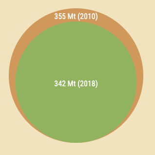
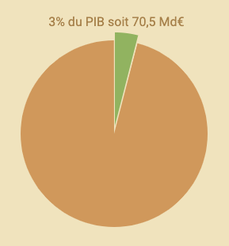
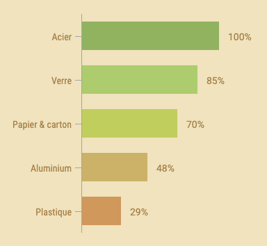

Éco-conso
Votre blog pour mieux consommer
Éco-conso
Votre blog pour mieux consommer
Bienvenue sur le blog d'Éco-conso !
Ce blog créé dans le cadre du projet de groupe numéro 1 de la Wild Code School (pôle développement Front-End remote) vous permettra d’en apprendre plus sur l’impact environnemental que l’Homme a de nos jours, ainsi que de vous présenter quelques façons de la réduire. L’écologie est désormais un sujet majeur aussi bien sociétal que politique, et à raison! Les dégradations de notre environnement naturel ne font que s’accélérer à mesure que nos modes de vie et notre population évoluent. Que ce soit la consommation excessive de plastiques en tout genre, la pollution due au transport, celle liée à la surconsommation ou encore l’industrie, vous êtes au bon endroit pour mieux comprendre comment adapter votre mode de vie afin de tous tendre vers un avenir respectant mieux notre planète.
Production de déchets en France
En France uniquement, la production de déchets s'est élevée à 343 Mt en 2018. Un chiffre impressionnant, mais que l'on peut relativiser car désormais en baisse (355 Mt en 2010) grâce aux diverses mesures mises en place par le gouvernement et la population. Les déchets ménagers ne représentent qu'une petite portion de ce chiffre, celui-ci étant à 70% issu du secteur de la construction (majoritairement des déchets minéraux).
Dépenses liées à l'environnement en 2020
En 2020, 70,5 milliards d'euros ont été consacrés aux dépenses environnementales, soit 3% du PIB de moins que l'année précédente. On peut cependant constater que les dépenses relatives à la gestion des déchets et à la récupération des matières premières de recyclage a quant à elle augmenté (et c'est le cas depuis 2010), en passant à 25,6 milliards d'euros, soit une hausse de 36%.
Taux de recyclage par matériau en 2019
Certains matériaux comment l'acier ou le verre sont très bien recyclés, mais ce n'est pas le cas du matériau le plus important : le plastique. Suite à la crise sanitaire en 2020, le recyclage a connu une régression par manque de main d'oeuvre et par surcharge des emballages ménagers. La France n'a pas encore atteint les 75% de recyclage des emballages ménagers fixés par la loi Grenelle I de 2009, en atteignant "seulement" 70,3% en 2019.
Quel est votre impact environnemental?
L'empreinte écologique mesure la quantité de surface terrestre bioproductive nécessaire pour produire les biens et services que nous consommons et absorber les déchets que nous produisons. C'est un indicateur calculé en fonction de nos habitudes quotidiennes, et de notre mode de consommation. Il est utile de connaitre son empreinte écologique afin de prendre conscience de l'impact qu'a notre mode de vie sur notre planète, et peut nous amener à réaliser à quel point certains actes ou choix peuvent avoir des conséquences auxquelles nous n'aurions pas initialement pensé. Si vous souhaitez vous aussi savoir si votre manière de vivre impacte plus ou moins négativement l'environnement dans lequel vous évoluez, n'hésitez pas à faire ce test de la WWF!
L'architecture écologique
L'architecture écologique (ou architecture durable) est un système de conception et de réalisation ayant pour préoccupation de concevoir une architecture respectueuse de l'environnement et de l'écologie. Il existe de multiples facettes de l'architecture écologique, certaines s'intéressant surtout à la technologie, la gestion, ou d'autres privilégient la santé de l'homme, ou encore d'autres, plaçant le respect de la nature au centre de leurs préoccupations.
On peut distinguer plusieurs "lignes directrices" :
- le choix des matériaux, naturels et respectueux de la santé de l'homme ;
- le choix de la disposition des pièces (par exemple) pour favoriser les économies d'énergie en réduisant les besoins énergétiques ;
- le choix des méthodes d'apports énergétiques ;
- le choix du cadre de vie offert ensuite à l'homme (jardin…).
Source : Wikipédia
L'importance d'une eau saine
Nous sommes constitués d’eau à 60% et nous avons besoin tous les jours d’une quantité moyenne d’1,5 litres d’eau. La qualité de l’eau revêt donc pour les hommes une importance vitale. L’eau est un très bon solvant et absorbe rapidement et facilement les molécules. La pluie contribue ainsi fortement à la pollution de l’eau, en se chargeant des pollutions atmosphériques et en captant, par son ruissellement, les molécules des roches et des sols. Parmi les principaux polluants de l’eau, citons l’azote (nitrates et phosphates), les pesticides, les hydrocarbures du fait de marées noires notamment, les bactéries provenant des excréments animaux ou humains, les métaux lourds, les déchets plastiques et les résidus médicamenteux. L’ingestion d’une eau infectée peut entraîner des épidémies de gastro-entérites et des diarrhées mortelles chez l’enfant, très rares en France cependant. Des cas de saturnisme peuvent résulter d’une contamination de l’eau par le plomb issu des canalisations. Les effets cancérogènes de l’azote et de métaux susceptibles de polluer l’eau (nickel, arsenic et chrome) sont par ailleurs prouvés. Enfin, la pollution de l’eau par les perturbateurs endocriniens, que constituent certains résidus médicamenteux et pesticides notamment, pourrait s’avérer préoccupante pour le développement et la reproduction.
Source : Le Figaro